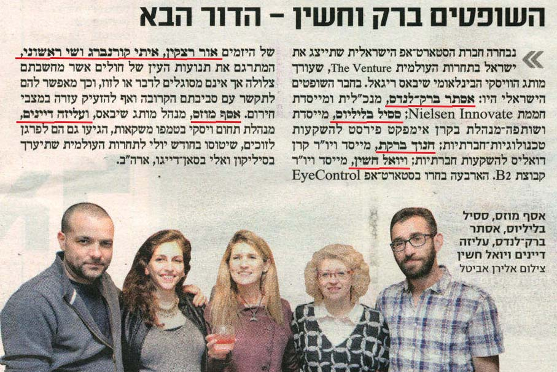
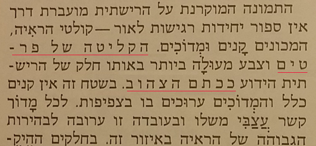

This document describes or points to requirements for the layout and presentation of text in languages that use the Hebrew script. The target audience is developers of Web standards and technologies, such as HTML, CSS, Mobile Web, Digital Publications, and Unicode, as well as implementers of web browsers, ebook readers, and other applications that need to render Hebrew text.
This document describes the basic requirements for Hebrew script layout and text support on the Web and in eBooks. These requirements provide information for Web technologies such as CSS, HTML and digital publications about how to support users of Hebrew script languages. The information here is developed in conjunction with a document that summarises gaps in support on the Web for Hebrew.
The editor's draft of this document is being developed by the Hebrew Layout Task Force, part of the W3C Internationalization Interest Group. It is published by the Internationalization Working Group. The end target for this document is a Working Group Note.
To make it easier to track comments, please raise separate issues or emails for each comment, and point to the section you are commenting on using a URL.
Some links on this page point to repositories or pages to which information will be added over time. Initially, the link may produce no results, but as issues, tests, etc. are created they will show up.
Links that have a gray color led to no content the last time this document was updated. They are still live, however, since relevant content could be added at any time. When the document is updated, links that now point to results will have their live colour restored.
The initial version of this document was prepared by Richard Ishida, based on technical input, mostly from Amir Aharoni.
See also the GitHub contributors list for the Hebrew Language Enablement project, and the discussions related to Hebrew script.
The aim of this document is to describe the basic requirements for Hebrew script layout and text support on the Web and in eBooks. These requirements provide information for Web technologies such as CSS, HTML and digital publications, and for application developers, about how to support users of the Hebrew script. The document currently focuses on texts using the Hebrew language.
This document is pointed to by a separate document, Hebrew Gap Analysis, which describes gaps in support for Hebrew on the Web, and prioritises and describes the impact of those gaps on the user.
Wherever an unsupported feature is indentified through the gap analysis process, the requirements for that feature need to be documented. The gap reports will typically point back to this document for more information.
As gaps in support for Hebrew are captured, the gaps can be brought to the attention of the relevant spec developer or the browser implementator community. The progress of such work is tracked in the Gap Analysis Pipeline.
This document should contain no reference to a particular technology. For example, it should not say "CSS does/doesn't do such and such", and it should not describe how a technology, such as CSS, should implement the requirements. It is technology agnostic, so that it will be evergreen, and it simply describes how the script works. The gap analysis document is the appropriate place for all kinds of technology-specific information.
To complement any content authored specifically for this document, the sections in the document also point to related, external information, tests, GitHub discussions, etc.
The document Language enablement index points to this document and others, and provides a central location for developers and implementers to find information related to various scripts.
The W3C also has a repository with discussion threads related to the Hebrew script, including requests from developers to the user community for information about how scripts/languages work, and a notification system that tracks issues in W3C working groups related to the Hebrew script. See a list of unresolved questions for Hebrew experts. Each section below points to related discussions. See also the repository home page.
The Hebrew script is essentially an abjad. This means that in normal use the script represents consonants but not all vowels. This approach is helped by the strong emphasis on consonant patterns in Semitic languages.
Note that the focus of this page is on everyday use for contemporary Israeli Hebrew, including educational materials, but not including biblical texts, prayer books, and the like. The latter tend to include additional characters, such as cantillation marks.
Hebrew text runs right-to-left in horizontal lines, but numbers and embedded Latin text are read left-to-right.
There is no case distinction. Words are separated by spaces.
The Modern Israeli Hebrew alphabet uses 22 letters, plus 5 word-final letters that have their own code points. Additional sounds can be represented using dagesh, shin/sin dots, or geresh.
Hebrew has 11 vowel diacritics in regular use to express vowel sounds (called niqqud or points), but rarely uses them in normal text. Hebrew readers are usually able to understand the pronunciation from the context and the regular structure of Hebrew words. These and other phonetic diacritics are written, however, where needed to clarify ambiguities or for educational purposes.
Vowel locations can be marked by 4 matres lectionis (consonants indicating vowel locations).A spelling innovation introduced by modern Hebrew uses matres lectionis to spell certain short vowels that would not have been marked in older texts. Although the hiding of short vowel niqqud would generally qualify Hebrew as an abjad, this 'full spelling' approach makes it partially alphabetic.
In vowelled text, there is a diacritic to indicate the absence of a vowel in consonant clusters.
Modern Hebrew uses both European digits, and ASCII punctuation marks.
The use of italic fonts in Hebrew is controversial. Some designers say that slanted fonts shouldn't be used at all. Some say that only meticulously designed slanted fonts can be used (although this is true also for Latin text).
Slanted fonts are not used in newspapers. Bold type is more likely to be used where English newspapers would use italics, although a different typeface is often used for that.
Bold type can be used for emphasis, or for highlighting specific items in text.

Most of the time Hebrew is written without diacritical marks, however there are two notable uses for diacritics:
Some known issues:
Hebrew text is generally similar to Latin text in this regard. The only issue to note is selecting and moving through text that includes the character maqaf, the Hebrew hyphen. It should behave like a hyphen.
According to the section on quotation marks (מירכאות) Academy of the Hebrew Language's punctuation rules, both single and double quotes are acceptable when there's no nesting. When there is nesting, different quotes are supposed to be used for the nested quote. In most of the examples in the document itself, the examples are written with double quotation marks in non-nested quotes and in the outer quote, and with single quotation marks in the nested quote.
Most of the examples in the document use the characters " [U+0022 QUOTATION MARK] and ' [U+0027 APOSTROPHE], however it also notes the following: "In handwriting and in traditional printing the opening quotation marks are low: „–”; ‚–’ On devices that don't support typing the low quotation marks, the high quotation marks are used." Typing the low and high quotation marks is defined in the SI 1452 standard (2012 version) on the keys Alt-;, Alt-L, Alt-., and Alt-,. This standard is implemented in Windows 8, as well as in desktop Linux distributions, and in the Gboard keyboard for Android and iOS.
Hebrew uses letter-spacing (tracking) to emphasise or highlight text (eg. people names, concepts, terms etc.).

Drop caps are used in Hebrew occasionally. If the text uses vowel or cantilation diacritics, all the diacritics on the letter must be included in the drop cap and styled accordingly.